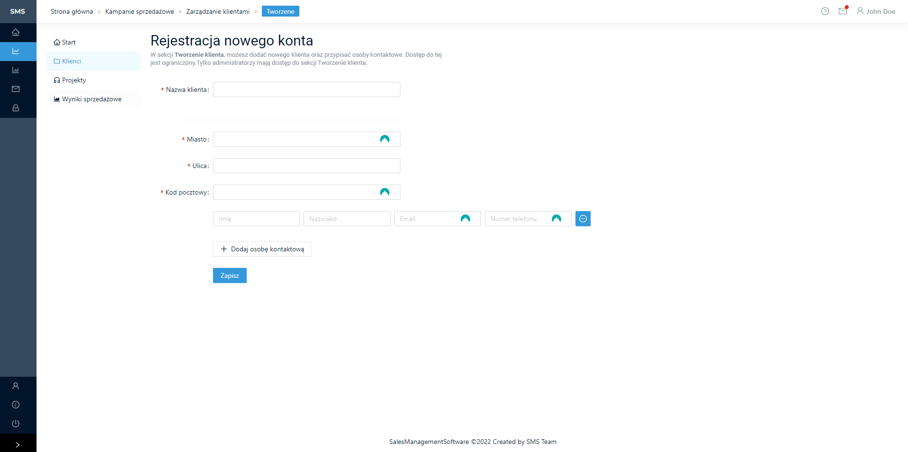

2. Kampanie sprzedażowe
Po wejściu w sekcje Kampanie sprzedażowe włącza się panel startowy z nawigacją tejże sekcji.
{kind=link}
2.1. Widok aktualnie projektów sprzedażowych
Lista wszystkich prowadzonych kampani widoczna jest po przejściu do zakładki „Projekty”. W liście z wszystkimi kampaniami podane są najważniejsze dane jak np. data utworzenia, status.
{kind=link}
2.2. Tworzenie nowego projektu sprzedażowego
Aby stworzyć nowy projekt należy nacisnąć przycisk „Utwórz nowy projekt”, który znajduję się wyżej tabeli ze wszystkimi projektami. Po naciśnięciu przycisku pojawią się formularz tworzenia nowego projektu który należy uzupełnić zgodnie z wymaganymi polami. Następnie po wprowadzeniu danych należy nacisnąć przycisk „Zapisz” w celu stworzenia projektu.
{kind=link}
2.3. Edycja istniejącego projektu
Aby edytować istniejący projekt należy w tabeli z wszystkimi projektami nacisnać przycisk „Edytuj” w ostatniej kolumnie projektu, który chcemy edytować. Następnie należy w wyświetlonym formularzu przesunąć suwak „Edycja włączona”, aby edycja była możliwa. Do wyboru są trzy sekcje informacji o projekcie przełączane wyżej formualarza. Po wprowadzonych zmianach należy nacisnąć przycisk „Zapisz”.
{kind=link}
{kind=link}
Sekcja zespół projektowy
{kind=link}
{kind=link}
{kind=link}
2.4. Zarządzanie klientami
Sekcja zarządzanie klientami wyświetla listę wszsytkich aktualnych klientów.
{kind=link}
2.5. Edycja istniejących klientów
Aby edytować dane istniejącego klienta należy w tabeli z wszystkimi klientami nacisnąć w ostatniej kolumnie przycisk „Edytuj” w wierszu z danymi klienta, które chcemy edytować.
{kind=link}
2.6. Rejestracja nowego konta klienta
Aby zarejestrować nowego klienta należy powyżej tabeli z spisem wszystkich klientów nacisnąć przycisk „Utwórz nowego klienta” i uzupełnić wymagane pola wyświetlone w formularzu oraz po wypełnieniu danych nacisnąć przycisk „Zapisz”.
